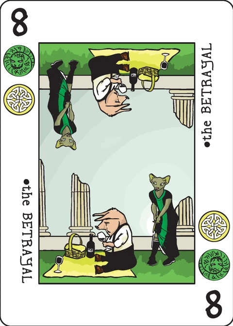

Second Story
a game of reckless burgling, for 2 players in this app
Any housebreaker can fill a sack with monogrammed silverware, but a spoon only shows a robber's skill when it's next to something else - maybe a gold broach, a china cup, or a set of false teeth. The real professional pilfers with variety.
You and the other players are house thieves in Jacynth, trying to prove your skill as mighty yeggs. Each turn of the game is one night of burgling. As you fill up your bag with loot, you always have the option of going to one more house. If you are detected, though, you must drop your bag and flee - which means losing anything you had collected that night.
Designed by P.D. Magnus · 2–5 players · 15 minutes · dice and chips (a d10 and 60 suit chips, emulated on screen in this app) · basic 36-card deck.
Components: In addition to the Decktet, the game requires 60 chips or tokens (10 corresponding to each of the Decktet suits) and 2 ten-sided dice.
Setup
There are optional rules for the Excuse, the Pawns, and the Courts, but the original rules use only the basic deck. Shuffle the deck and put it in the center of the table. Gather the chips together as a bank.
Decide in some nefarious way who will take the first turn. Subsequent play proceeds clockwise around the table.
Game Play
At the beginning of your turn, the top card of the deck is flipped over. The card represents the house you are trying to burgle. The rank of the card represents the level of security; higher ranked cards are more secure. The suits on the card represent the kinds of things in the house worth stealing.
With a number card, you have the option of doing a thorough job or being quick about it. To do a thorough job, roll one die. If the result meets or exceeds the rank of the card, then you rob the house undetected; take two chips from the bank (one matching each suit on the card) and put them next to the card to indicate that you have them in your bag of loot. If the result is less than the rank of the card, then you have drawn the attention of the guard; any chips in your bag of loot are returned to the bank and your turn is over.
To be quick about it, roll both dice. If one or both dice meet or exceed the rank of the card, then you may take one chip from the bank and put it in your bag of loot. The chip must match one of the two suits on the card, but you may pick which. If both of the dice are less than the rank of the card, then the guard has noticed you; any chips in your bag of loot are returned to the bank and your turn is over.
Note that most ten-sided dice have a '0' on the tens face; a '0' is a high roll that always succeeds.
Crowns are treated as rank ten: very well-protected houses. Since there is only one suit symbol on the card, you should always roll two dice when a Crown is turned up.
Because Crowns are not just ordinary houses, you may sometimes take a second chance when neither die rolls the ten you need. If you have a chip in your lair that matches the suit on the Crown (loot from a previous turn), you may move it to your bag of loot in order to reroll the dice. If you miss it again, you lose everything in your bag, including the chip which you added from your lair. (You may try another second chance if you have another chip in your lair to risk.) If you make it, you may end your turn or continue as usual.
Aces represent a bit of luck. If an Ace is turned up and you do not have a chip corresponding to the suit of the Ace in your bag of loot, it's good luck; take a matching chip from the bank and put it in your bag of loot. If you already have a chip of that suit in your bag of loot, something has fallen out of your bag; return one matching chip to the bank. In either case, another card should be flipped over. You can't end your turn on an Ace.
Try another? When you have successfully burgled a house, you may decide either to end the night or to try another house.
If you end the night, take any chips in your bag of loot and put them in front of you. These are goods you have taken back to your lair. Although it is possible to lose chips that are in your bag of loot, there is almost no way to lose chips once they are in your lair. (You can only lose chips from your lair if you risk them on a second chance against a Crown.)
If you keep going, another card is flipped over. Resolve it as above. Note that you may not back down from a house once the card has been flipped over. By that time, you are already inside.
When your turn is over, any revealed cards are put in the discard pile. The player to your left takes the next turn.
Reshuffle the discard pile to form a new draw pile if ever the deck is exhausted.
The last night: If a turn ends and one type of chip has been entirely depleted from the bank, the game enters a final phase. Each player gets one final turn in which to try and end with the highest score. Play order continues in the usual way, so that the player who took the last chip from the pile will also get the final turn.
Note that the final phase only begins when a type of chip is emptied from the bank at the end of some player's turn. Suppose a player has the last chip of a kind in their bag of loot, presses their luck by drawing another card, blunders the job, and has to return their loot to the bank - that would not trigger the final phase.
If a type of chip is depleted from the bank, then there just isn't anymore of that stuff left in the city to steal. If you rob a house that has the suit symbol of a depleted type, you can not draw a chip for that suit and get no compensation. You still have to roll the dice even if the card has no suits that correspond to available chips.
Scoring
At the end of the game, look at whatever chips you have in your lair. Disregard the suit you have the most of, and see which other suit you have the most of after that; that is, look at your second most numerous suit. Your score is the number of chips you have in that suit.
If two players have the same score in their second most numerous suit, look at third most numerous suit. If that is also even, look at fourth most numerous… and so on. If there is parity even on the sixth most numerous suit, then the game is deemed to be a tie.
Example: Morgan has 6, 4, 3, 2, and 1 chips in five different suits. Siveny has 4, 4, 3, and 3 chips in four different suits. Their most numerous suits are disregarded. Each has 4 chips in their second most numerous suit, and 3 in their third most numerous - a tie so far. Siveny has 3 in her fourth most numerous suit; Morgan only has 2 in his. So Siveny wins.
The extended deck
If you want to use some or all of the extended deck cards, just shuffle them into the deck. They make the game a bit less brutal.
The Excuse indicates a scurrilous attempt to talk your way out of a jam. If it is flipped up on your turn, put it next to your bag of loot. Another card should be flipped over. If you end the night by choice, move the Excuse to your lair. On a later turn, when you fail to roll what you need, you may discard the Excuse and immediately reroll the die or dice.
Pawns and Courts represent tenement houses. You must decide whether to work quickly through one flat, to ransack several, or to trundle through the whole building. You only roll one die in any case, but the risk and reward are different. If you choose one flat, you need to roll at least a 3 and (if you succeed) you may take one chip that corresponds to a suit on the card. If you choose several flats, you need to roll at least a 6 and (if you succeed) may take two chips that correspond to two different suits on the card. If you choose all the flats, you need to roll at least a 9 and (if you succeed) you may take three chips that correspond to the three suits on the card.
Credits
Design: P.D. Magnus
Playtesting: John Milanese, Chris DeLeo, Cristyn Magnus, Jorge Arroyo, Tom Kiehl, Jason Basse, Nate Brown, Sean Tuxill, Lena Kiehl, Samantha Derby, Steve Kiehl, Dan Purdy, Kevin Warrender
Extended deck rules are based on suggestions by Benski Dayley.
Note on this implementation
Two players, one device: the app plays exactly two players; turns simply alternate ("clockwise" around a table of two). The chips, the bank, both lairs and the d10 are all drawn on screen, and the pass screen covers the table between nights so each player makes their own choices. There is no hidden information in this game: hands do not exist, and everything either player does is public.
The dice: the d10 is rolled from a seeded sequence kept in the save, so reloading mid-night shows the same roll; a '0' face is the high 10, exactly as the wiki notes.
Depleted suits: when the bank has none of a suit left, a successful job simply pays nothing for that suit (the wiki's "no compensation"), including an Ace of a depleted suit, which does nothing but still flips another card. You still roll, as the wiki requires.
The last night: the final phase begins at the end of the turn that empties a suit; play then continues in order, so with two players the other burglar gets their last night first and the player who emptied the bank plays last. More depletion during the final phase adds no further turns.
Scoring and ties: scores are computed from the lair chips exactly as described (second most numerous suit, ties broken by third … through sixth); if that is still even, the app declares a tie. Chips banked in a lair are never lost except via a crown's second chance, as the wiki says.
These rules are copied from the Second Story page of the Decktet wiki (page revision 16, 4 November 2024) so they can be read offline, under the wiki's CC BY-NC-SA 3.0 licence. Cards by P.D. Magnus, same licence.
Further reading: Second Story at BoardGameGeek